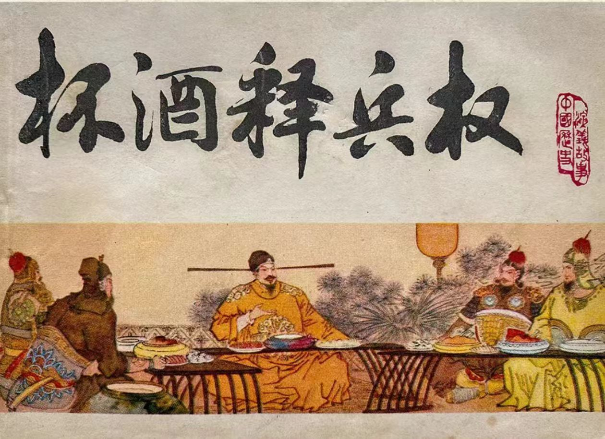

杯酒释兵权，是中国历史上一个著名的政治事件，发生在北宋乾德年间，即公元961年。这一事件是宋太祖赵匡胤通过一次宫廷宴会，成功地解除了大将石守信、王审琦等人的军权，从而加强了中央集权，防止了军事将领的割据。
在五代十国时期，由于政权更迭频繁，军事将领往往拥有极大的权力和影响力，甚至能够左右皇帝的废立。赵匡胤本人就是通过军事政变上台的，因此他深知军事将领的威胁。为了加强中央集权，防止类似的事件再次发生，他决定采取行动。
在一次宫廷宴会上，赵匡胤邀请石守信、王审琦等大将赴宴。席间，赵匡胤故作忧愁之状，向大将们诉苦，称自己夜不能寐，担心他们将来也会像自己一样黄袍加身，夺取皇位。大将们听后惶恐不安，纷纷表示忠诚于皇帝，绝无二心。
赵匡胤趁机提出，为了国家的稳定和自己的安全，大将们应该主动交出兵权，享受富贵荣华。他还承诺给予大将们优厚的待遇和崇高的地位。在赵匡胤的劝说下，大将们纷纷表示愿意交出兵权。
杯酒释兵权事件是中国历史上一个重要的政治事件，它标志着北宋中央集权的加强和军事将领的衰落。通过这一事件，赵匡胤成功地消除了军事将领的割据威胁，加强了皇权，为北宋的稳定和发展奠定了基础。同时，这一事件也反映了中国古代政治文化中的权谋和智慧，为后人提供了深刻的启示。
王安石变法，发生在北宋时期，是由著名政治家、思想家王安石发起的一系列经济、政治、军事和文化上的改革措施。这场变法旨在富国强兵，改善民生，推动社会进步。
在经济方面，王安石推行了青苗法、募役法、方田均税法和市易法等。青苗法是为了解决农民在青黄不接时的借贷问题，减轻他们的负担；募役法则是通过政府征募壮丁来替代原先的差役，以减轻农民的劳役负担；方田均税法则是为了平均赋税，防止地主隐瞒土地，逃避税收；市易法则是为了稳定市场价格，防止商人囤积居奇，牟取暴利。这些措施有效地改善了北宋的经济状况，促进了社会生产力的发展。
在政治方面，王安石推行了保甲法和将兵法。保甲法是为了加强乡村的治安和防御，通过组织民兵来维护社会秩序；将兵法则是为了加强军队的战斗力，通过选拔优秀的将领和士兵来组建强大的军队。这些措施有效地加强了北宋的中央集权，巩固了国家的统一。
在军事方面，王安石推行了保马法和设军器监等。保马法是为了解决军队的战马问题，通过民间养马来解决军队的战马来源；设军器监则是为了加强武器的制造和管理，提高军队的装备水平。这些措施有效地提高了北宋的军事实力，增强了国家的防御能力。
总的来说，王安石变法是一场全面而深刻的改革，它涉及到了经济、政治、军事和文化等多个领域。这场变法不仅改善了北宋的社会经济状况，加强了中央集权，提高了军事实力，而且还推动了社会进步和文化繁荣。虽然变法过程中也遇到了一些困难和阻力，但总体来说，它对于北宋的发展和进步产生了深远的影响。
靖康之耻，发生于公元1127年，是北宋历史上的一个重大事件，也是中国古代历史上的一次巨大耻辱。这场事件源于金国的入侵，导致北宋都城东京（今河南开封）被攻陷，北宋皇室被俘，大量财富和文物被掠夺，国家灭亡。
靖康之耻的起因可以追溯到北宋与金国的外交纷争。北宋末年，政治腐败，国力衰退，而金国则逐渐崛起。两国之间的关系紧张，最终引发了金国的入侵。
金军在入侵过程中，采用了巧妙的战略，避开了北宋的主力军队，直取东京。北宋朝廷在应对金军入侵时，由于决策失误和军队战斗力低下，无法有效抵抗。最终，东京在1127年被金军攻陷。
在东京被攻陷后，金国军队在城内进行了大规模的掠夺和屠杀。北宋皇室成员被俘虏，包括宋徽宗、宋钦宗等人在内的大量贵族、官员和百姓被押往金国。此外，大量的文物、珍宝和财富也被金国掠夺走。
靖康之耻的影响深远而持久。首先，它导致了北宋的灭亡，中国历史上的一个朝代因此结束。其次，它给中国人民带来了巨大的痛苦和创伤，许多人因此失去了家园和亲人。此外，靖康之耻也成为了中国历史上的一个耻辱，提醒着人们要铭记历史，奋发图强。
对于靖康之耻的反思，我们应该认识到一个国家的强盛离不开人民的团结和国家的治理。同时，我们也应该铭记历史，从中吸取教训，不断提高国家的综合实力，防止类似的历史悲剧再次发生。
总之，靖康之耻是中国历史上的一次巨大耻辱，它给我们留下了深刻的教训。我们应该铭记历史，不忘国耻，为国家的繁荣富强而努力奋斗。